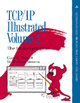

TCP/IP Illustrated, Volume 2: The Implementation
, Addison-Wesley, 1995, ISBN 0-201-63354-X.
Additional Information:
Table of Contents, Preface, etc.
Current errata
.
Foreign language translations
.
Order it now
(In
association
with Amazon.com Books).
Back to W. Richard Stevens' Home Page
 Back to W. Richard Stevens' Home Page
Back to W. Richard Stevens' Home Page